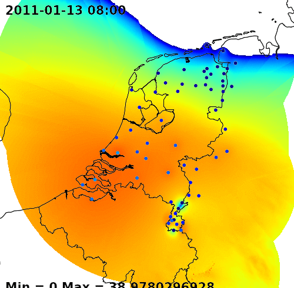

GIS @
Nelen & Schuurmans
@
Nelen & Schuurmans
Fritz van Deventer
i am fritz. i make things. mostly music (@cheesesofmexico) and computer stuff (@fritzvd) e.g. with javascript.
From MSc to Job in IT
Nelen & Schuurmans
advisors, gis, itGIS at water consultancy?
- Everything we do is spatial
- Die-hard GIS ❰ ❱ Cloud solutions
- NumPy / GDAL, PostGIS, Python, python python. Javascript. QGIS
Why Geoscripting?
- Reproducable results
- Quick and dirty analysis
- Automation of all da tings
- We don't like RSI
- Fun.
example time
Nationale Regen Radar (NRR)
national shower radar (NRR)
NRR
- Comparing cokriging, kriging and IDW
- in R in Python
- automated
- open source
After trial and error part, getting good results etc. Implementing
3Di

3Di
- Flood simulation
- 10,000 times faster than SOBEK
- Resolution is as good as the DEM
- Bizar technical challenge
What would you need?
Classic GIS
- ArcGIS/QGIS R/Rstudio wha-evah
- local / remote you are the artist
- End product is 'static'
GIS at Nelen & Schuurmans
python, gdal, r, javascript, servers, wms etc.Play with some data
http://fritzvd.com/turf-exampleFinal remarks
Learn some Python/JavaScriptTeach yourself about DatabasesTry out Linux